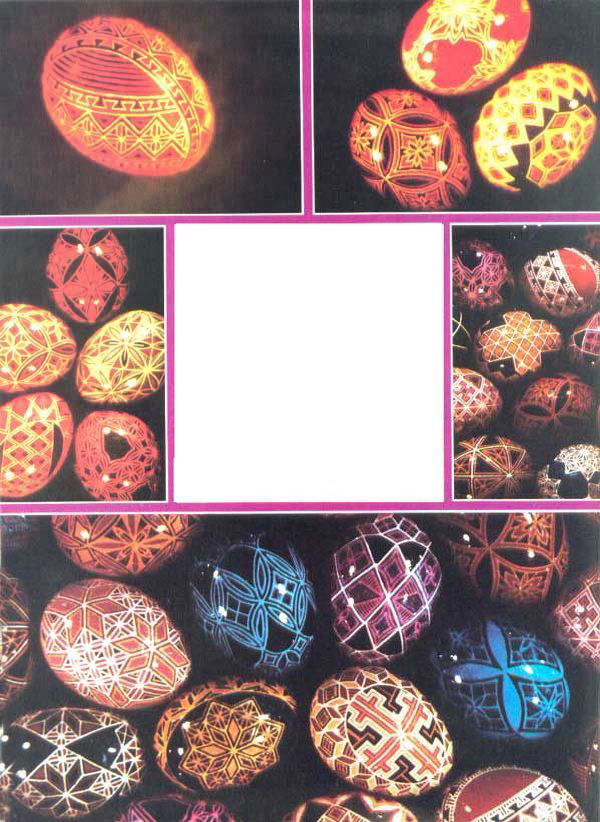
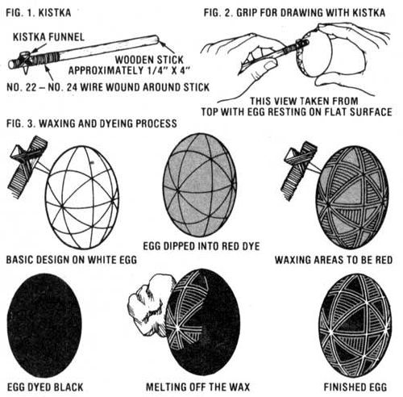

Give the Easter Bunny some competition! Supplement your income with...
For over 2,500 years, the art of egg decoration known as pysanky (pronounced "pee-sahn-kee") has been practiced in the Ukraine. Originally, this craft formed an integral part of that culture's religious tradition, since the egg was a pagan symbol for the rebirth of spring. And, when the Ukrainian people were converted to Christianity, they simply incorporated the new religion's various motifs into their traditional ones and continued to practice this delicate art.
Today, however, the craft is dying out in its home country, but pysanky is still kept alive by small groups of Ukrainians in the United States and Canada. I have always loved the art, and-once 1 mastered the technique - I discovered that such eggs (which cost me 11 cents to decorate) could sell for anywhere from $2.50 to $15!
It only takes about $5.00 worth of materials to get ready to make these charming little masterpieces. All you need are some intact eggs (raw or blown hollow), a few ounces of beeswax, a supply of fairly tall, thin candles, a set of prepared dyes, and a small stylus known as a kistka . . . which is the one tool that's essential for this craft.
The kistka-as shown in Fig. 1-is just a tiny funnel set into a hole in the end of a short stick. To make the funnel, simply twist a small piece of brass or copper foil into a hollow cone with a 1/4"-wide base and a minuscule hole at the small end. Remember that, although the funnel doesn't have to be structurally strong, it does have to hold heated wax ... so coil it as tightly as possible.
Then, in order to protect the wooden handle while the wax is heated over a candle flame, wind No. 22 to No. 24 wire just forward and aft of the funnel ... or cover this area with very thin sheet metal or foil.
As for the other supplies, a pound of beeswax should last through a few dozen eggs, and it is available from beekeepers, fabric shops which sell batik supplies, art and hobby shops, and some candle stores.
Any cold-water dyes will work for pysanky decoration. The food-colors of the American Easter egg tradition, however, aren't usually as bright and permanent as you might want. Strong chemical dyes can, of course, be used . . . since the decorated eggs are much too pretty to eat! But if you want the super-intense hues used by many "pysanky people", you'll have to order your dyes-for about 30 cents per color-from the Ukrainian Gift Shop, 2422 Central Avenue N.E., Minneapolis, Minnesota 55418. (You can get their catalog for 25 cents, and-for $8.98 plus $1.25 postage and handling-the Gift Shop will send you a pysanky kit which contains three kistkas, beeswax, 12 dyes, and instructions.)
The principle behind pysanky is akin to the more well-known, wax-resist art of batik.
To begin, place just enough beeswax in the funnel of the kistka to fill it. Then, heat the funnel directly over the candle flame until the wax reaches its melting point. (Be careful not to overdo it, or your beeswax will boil out of the funnel ... or expand too much and produce globby lines when you draw on the egg.) Test the kistka on a piece of paper before you begin your first project ... to be sure that just a thin line of wax flows out the tiny hole in the funnel. (The grip I've found most feasible for holding the kistka is shown in Fig. 2.)
Once you've mapped out your basic design, place the patterned egg in the lightest dye (say, yellow) that you intend to use. As you'll see, the wax lines will resist the dye and leave the area under them white (or whatever the natural egg color happens to be).
Next, wax in those parts of your design that you want to be yellow, then place the egg in the second-somewhat darker-dye . . . which will cover up all of the yellow that isn't "protected" by the beeswax lines. In other words, you wax out the areas which you want to remain the color they are at the time of the waxing. Fig. 3 shows an example of an egg as it goes through this process. Another typical color sequence might be yellow, orange, red, and black.
After the final-and darkest-dye has been applied, you're ready to take off all the wax and reveal the beautiful colors underneath. To do this, just hold the egg close to the side of the candle flame, and the wax will melt and drip off ... or, you can wipe the coating off with a tissue or soft cloth. ( Don't hold the egg over the candle, though, or the carbon from the flame will soot up your design.) You can also put the egg in a "low" oven for the few minutes necessary to melt the wax.
Once the egg was clean, the Ukrainians used to rub it with butter, but I apply a coat of varnish . . . because this "finish" offers better protection.
Traditionally, pysanky eggs were given raw, and the contents eventually dried up. I prefer to use blown shells, however, since this method allows me to eat the egg whites and yolks that I remove, and the hollow shells are less likely to break if dropped. When using "empty" eggs, however, you have to be sure to plug up the "blow holes" with wax, or the shells will fill with dye. Then, before you melt the wax off, remember to unplug the holes. Otherwise, the air inside the finished egg may expand from the heat and cause your artwork to explode (and that can be a very traumatic experience!).
Some people decorate an egg, varnish it, and then blow it out. The advantage to this method is that the raw egg will be heavy enough to sink into the dye without being weighted down. It's best to practice up a bit on blowing eggs before you try this, however, so you don't crack your artwork in the process. I've found that 1 can empty an egg quickly and easily if I punch a hole in one end with a tiny drill and then pump out the contents with a syringe.
Pysanky has several advantages as a means of supplementary income. Aside from the fact that it involves only a tiny capital investment, the business is seasonal . . . and egg decorating is a great way to enrich long, winter evenings. As an added bonus, the design possibilities are nearly endless! On top of the beautiful Ukrainian motifs, you can adapt this art to a wide range of decorative styles in order to reach a variety of audiences. And, although pysanky eggs are a "natural" for Easter, folks also use them as gifts, Christmas tree decorations, and casual ornaments.
You can sell these little works of art to stores, of course, but I've made the most money at craft fairs. Also, sales to friends-of-friends have accounted for over half of my trade . . . especially around the Christmas and Easter "busy seasons".
On the negative side, though, you should know that pysanky is a fairly time-consuming craft, enough so that I average only $2.25 per hour for my labor. Still, with about 25 hours' work a week, I earned $1,700 over a six-month period last year, and the past three Easters brought in between $300 and $400 apiece.
I should point out, too, that your egg market will suffer under a surfeit of competition . . . so, if there's another egg-decorator in your area, it's best to be sure that you're better than he or she is. At any rate, the time spent becoming a true pysanky artist is both fun and satisfying. And-if you look into its traditions-there's a lot more to this exquisite craft than pretty eggs.
The word pysanky stems from the verb pysaty (which means "to write") and is translated as "written egg". Therefore, each color and symbol should have a special meaning, and each egg should convey a wish. For example, in the Ukrainian Easter egg tradition, a stag might symbolize leadership ... a chicken, fertility . . . a fish, abundance . . . and a spider, artistry. As for colors, yellow stands for purity . . . green can mean bountifulness . . . orange, strength . . . black, eternity . . . and so on.
And, aside from all these mystical meanings, just the act of egg decoration is a part of a greater legend: It's said that should this ancient custom ever cease, a chained monster of evil will burst his bonds and devour the world . . . but that, on the other hand, the evil on the earth will become less as more beautiful eggs are produced.
I'd say that that's as good a reason as any to decorate an egg!
|
 |
 |
|